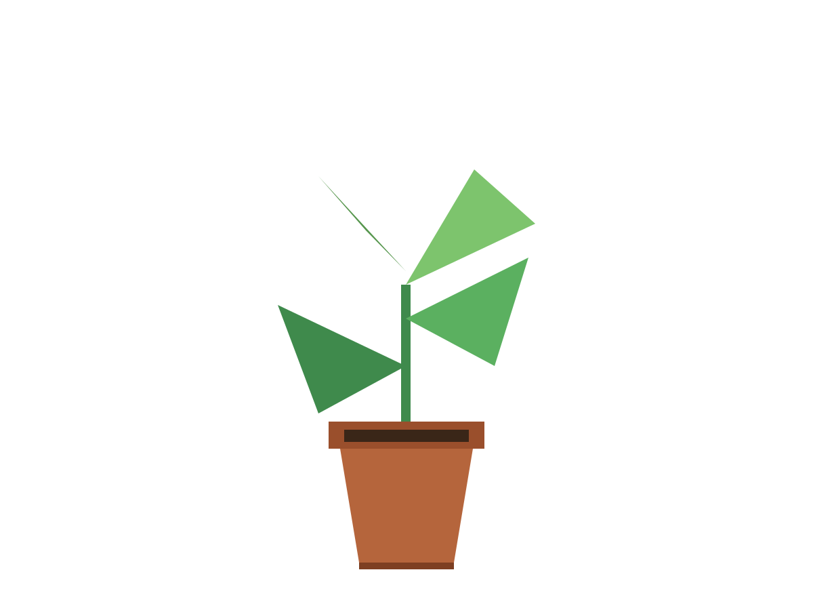

Components
Swatch
A swatch set lets someone pick one colour: the backdrop behind a cut-out, the cover of a deck, the colour of a label. It is a group of radio buttons, so the keyboard, the screen reader and the form all already know how it works. What the guide adds is a chip you can see, a name you can read, and a choice that does not rest on hue.
When to use
Use it when the colours are the content and there are about four to twelve. Give every swatch a real name (Terracotta, not Colour 6): it is what a screen reader says and what a person uses to tell two greens apart.
Use it to choose a theme or a status (those are roles, not user colours), or to pick among two or three options (use a segmented control). For any colour at all, open the browser's own colour picker from a button.
A set of swatches
The fieldset's legend names the choice. --swatch on each label is its colour. The chosen swatch has a check, a second ring separated by a gap, and an underlined name: three cues, none of them colour. The chip keeps its size at any text size and the names grow; the columns are sized for the names, so twelve colours are four rows of three on a small phone, three rows of four on a phone, six rows of two at 200% text and two rows of six on a wide screen. The rows always come out even: a set is never five to a row, and a set of four, six or eight picks a count that divides it.
Why a swatch may take its colour from data
Every other element in this guide reads roles, never a colour. A swatch is the one exception, for the same reason an <img> is: the colour is the user's content, and the guide cannot know it. There is no role for "the colour of this person's third deck". So the swatch takes --swatch from the element and nothing else in the component is data-driven: the frame, the selection ring, the focus ring, the name and the check's backing are roles, so the chip always has an edge and the choice is always visible, on any surface, in any palette, in dark and in forced colours. The swatch colour itself does not change with theme or palette, because it is not part of the theme.
Pale and very dark swatches are the test. Cream on a paper card and Charcoal on a dark stage both keep a 2px edge. The check is black or white, whichever contrasts more with that swatch.
States
The chip is a circle you press: it raises with a hard shadow on hover and on keyboard focus, and when pressed it sits back down while the whole option takes a light tint, so a tap shows at once. A colour is the content, so no state paints over it: chosen is the check, the second ring and the underlined name, and a chosen swatch raises like any other. Unavailable swatches (a colour a plan does not include) are dashed. The is-* classes only force a state for this page.
In context
The Backdrop tool of a photo editor: the picture's backdrop follows the choice as it changes (try it), and Cancel and Apply stay where they are on every tool. Eight colours: four to a row on a phone, two to a row on a small phone or at large text, so the rows always come out even.

Backdrop
Anatomy
- Set (
fieldset.with aswatch-set <legend>): names the choice. The browser groups the radios byname. - Option (
label.): the whole label is the target, never under 44px.swatch-set__opt --swatchgoes here. It takes a light tint while it is pressed. - Radio (
input[type=radio]): invisible, stretched over the label, so it is the hit area and the thing that takes focus. - Chip (
.swatch-set__chip): a 44px circle in the swatch colour with a 2px--lineframe, so any colour has an edge. - Check (
.ic--check): shown only on the chosen swatch, black or white by the swatch's lightness, or on a paper plate in forced colours. - Selection ring (
::afterof the chip): the doubled frame. A gap of one line width, then a second 2px line. - Name (
.swatch-set__name): sentence case, visible, 20px under the chip (10px clear of the focus ring around a chosen chip), wraps between words. Underlined when chosen.
API
| Part | Attribute | Effect |
|---|---|---|
fieldset.swatch-set | <legend> (required) | The group. Names the choice for assistive tech. |
.swatch-set__list | A wrapping grid of options. A column holds a 4rem name ("Terracotta") and never less than the chip, and the row shows six at most, so a name is never cut inside a word. | |
label.swatch-set__opt | style="--swatch: #b4532a" | The swatch colour: any CSS colour. The only colour in the component that is not a role. |
input[type=radio] | name, value, checked, disabled | The state. Everything visual follows :checked, :focus-visible and :disabled. |
| Custom property | --swatch | Falls back to --paper-2 if you forget it, so a missing colour is visibly empty rather than invisible. |
Accessibility
| Interaction | Behaviour |
|---|---|
| Tab | Enters the group on the chosen swatch (or the first when none is chosen); the next Tab leaves it. Native radio behaviour. |
| Left Right Up Down | Move to the next or previous swatch and choose it, wrapping at the ends. Native. |
| Space | Chooses the focused swatch if none is chosen. |
| Screen reader | "Backdrop, group. Sky, radio button, checked, 1 of 12." The name is the visible word, so it is read and can be spoken to select. |
| Touch | Tap the chip or its name: the whole label is at least 44px wide and tall. No gesture. |
| Zoom / text size | The chip, the check and the insets keep their size; the names grow, and the columns are sized for them, so at 200% text on a phone a set is two to a row (not one big circle a row) and a name never breaks inside a word. |
| Reduced motion | The chip does not travel when it lifts; the shadow and the pressed tint still show. |
| Forced colours | Swatches keep their colour; frames become CanvasText; the chosen one has a 4px frame, a Highlight ring and its check on a Canvas plate. |
Tokens used
--paper, --paper-2, --ink, --ink-faint, --line, --focus, --bw, --bw-heavy, --ring, --ring-offset, --radius-pill, --radius-tile, --chrome-ctl, --chrome-hit, --chrome-ic-sm, --chrome-1 to --chrome-4, --space-2, --fill, --type-ctl, --type-meta, --lift, --dur-hover, --dur-press, --ease-out, --move. The one non-role input is --swatch.